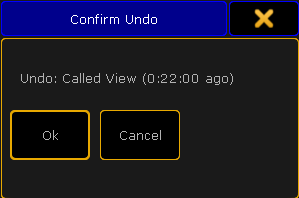

Oops Key
The key Oops is located in the command area on right of the key Edit.
Location key Oops
- Pressing Oops deletes the last keyword or number you entered in the command line.
- If the command line is empty, pressing Oops executes the Oops keyword.
The pop-up Confirm Undo opens.

Pop-up Confirm Undo
- Pressing and holding the key Oops for about 2 seconds, opens the pop-up Multi-Oops.
Pop-up Multi-Oops